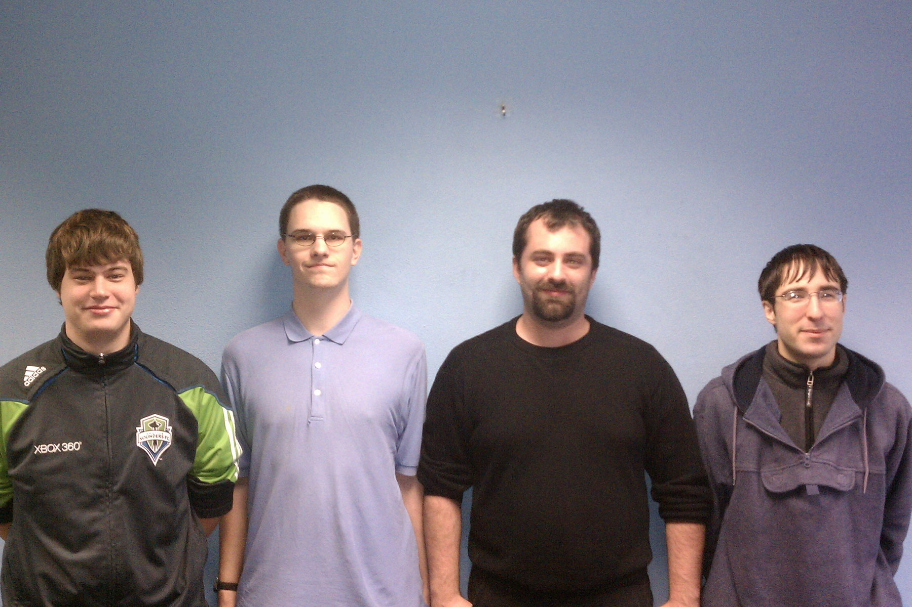

| Idaho Cost and Budget Management |
|---|
| A team developing the Idaho Department of Health/Welfare Time, Accounting, and Reporting System |

Left to Right: Scott, Brett, Chaylo, Alex
Left to Right: Scott, Brett, Chaylo, Alex
Who are We?
Welcome to the project page for the Idaho Cost and Budget Management senior design team.
The purpose of ICBM is to create an intuitive and stable web-based Time, Accounting, and Reporting System for the Idaho Department of Health and Welfare.
Further details are available on the Project Description Page. The development team consists of:
- First Semester
- Scott Beddall
- Brett Hitchcock
- Chaylo Laurino
- Alex Nilson
- Second Semester
- Zeke Long
- Nathan Mazur
- Greg Donohoe
- Don Moreaux
- Marj Sanderson